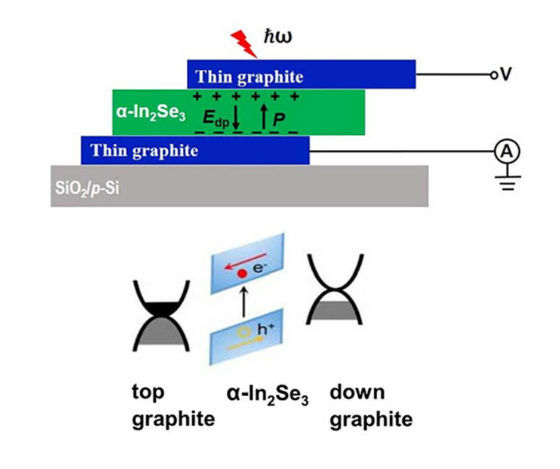

Nanoscale photodetection
Bulk Photovoltaic Effect in a Two-Dimensional Ferroelectric Semiconductor alpha-In2Se3
Ferroelectric order in a two-dimensional semiconductor enables a bulk photovoltaic response, linking symmetry, polarization, and optoelectronic device behavior.
Read the paper